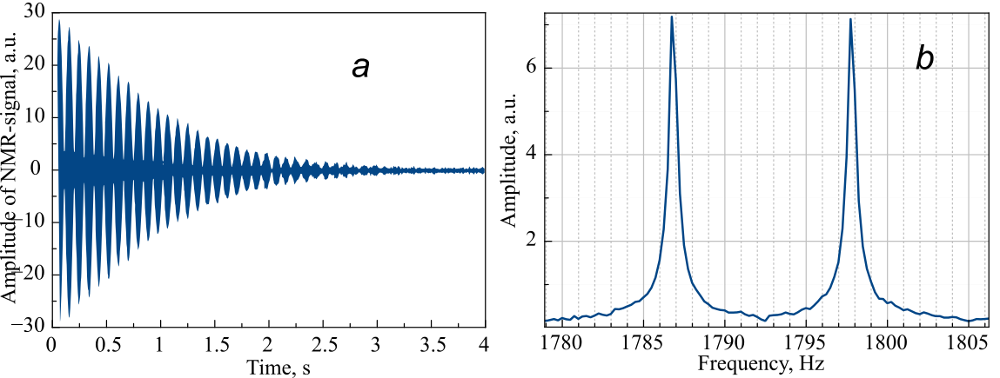
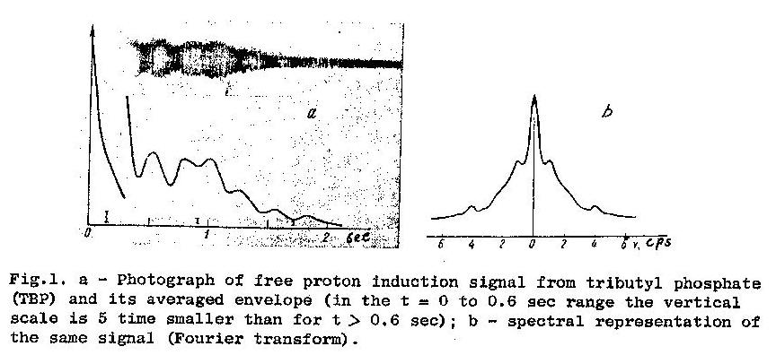

Первое фурье-преобразование было сделано в СССР
Для непосвящённых: преобразование Фурье это операция преобразующая функцию временного диапазона в функцию частотного диапазона. Например, у вас есть звуковая запись, в которой наложены друг на друга несколько сигналов от разных источников. Разделить их, чтобы проанализировать запись можно, используя слух и различные фильтры. Это достаточно долго и неточно. Фурье-преобразование позволяет это сделать влёт. При этом вы получаете полный спектр сигнала, на котором положение каждой линии соответствует частоте сигнала, а её амплитуда - интенсивности или, проще говоря, громкости.

Пример звукового сигнала (a) и его спектр (b), на котором видно два близких по частоте источника с одинаковыми амплитудами.
Радиоспектроскопия была бы невозможной без алгоритма быстрого фурье-преобразования (FFT) и мощных вычислительных машин, способных его реализовывать. В этом ее главное отличие от обычной оптической спектрометрии, где для разложения света достаточно призмы или дифракционной решетки. В случае такого широкого диапазона очень длинных волн чрезвычайно проблематично создание спектрометра основанном на преломлении или дифрагирования радио-луча.
Немного о радиоспектроскопии. Радиоспектроскопия используется не только в астрофизике. Ядерный магнитный резонанс (ЯМР) это тоже радиоспектроскопия. Где он используется? В химическом синтезе для анализа веществ. Нам ЯМР более знаком в МРТ. Да, на самом деле магнитно-резонансная томография - ядерная, но только букву "Я" убрали из аббревиатуры, чтобы не пугать пациентов.
Таким образом, наличие алгоритма быстрого преобразования Фурье и отсутствие достаточно мощных компьютеров оттянуло появление ЯМР-спектроскопии почти на 25 лет. Необходимы были компьютеры, чтобы осуществить мечту исследователей ЯМР. Когда такие компьютеры только начали появляться за рубежом, в СССР, в ЛГУ, на кафедре радиофизики в 1958 году Фёдор Иванович Скрипов, Аркадий Викторович Мельников и Александр Анатольевич Морозов, получив на самописце сигнал от протонов в трипропилфосфате в магнитном поле Земли, обрисовали этот сигнал на миллиметровке, разбили по точкам и приступили к быстрому преобразованию Фурье.
Расчет делался на электромеханических арифмометрах. Всего месяц потребовалось ученым, чтобы на такой же миллиметровке получить спектр ЯМР-сигнала. К расчетам были подключены даже жёны учёных. Результаты были представлены в журнале "Бюллетень Академии наук СССР". И хотя существовала англоязычная версия этого журнала, за рубежом этот факт не нашел отклика.

Иллюстрация к статье «Applications of the weak-field free nuclear induction technique in high-resolution radio spectroscopy» англоязычной версии советского журнала «Бюллетень Академии наук СССР», серия «Физика» т. 22, стр. 1127 1958 г.
Возможно, в этом была вина «холодной войны». Но, тем не менее, через 10 лет, когда за рубежом на коммерческой основе быстро начала развиваться магнитно-резонансная спектроскопия в лице компаний "Бруккер" и "Вариан", возникло досадное судебное разбирательство. Дело в том, что у "Вариана" уже был патент на этот метод, а "Бруккер" его использовал, не заплатив денег "Вариану". И чтобы не проиграть дело, руководство "Бруккера", вдруг, вспомнило про статью в советском журнале и выиграло дело.